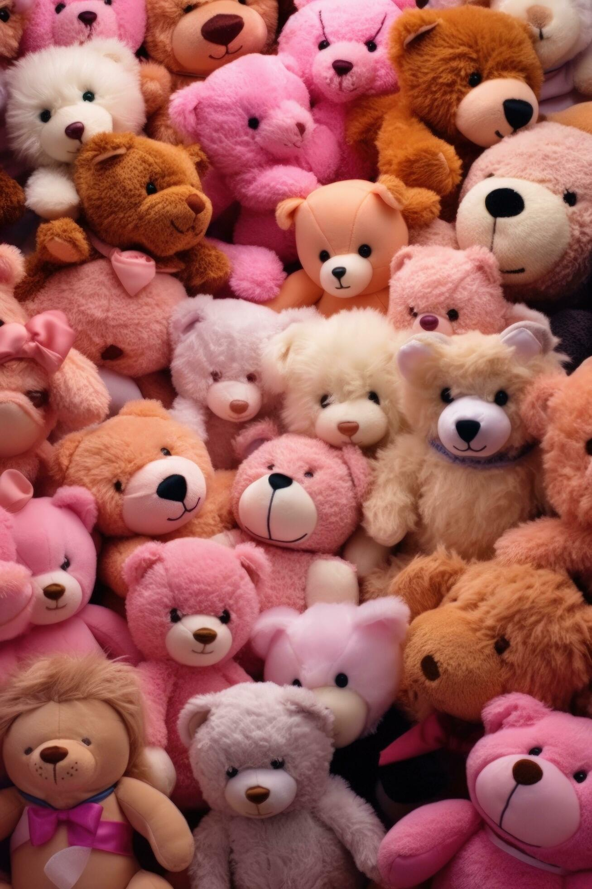

About Us
Welcome to Soft toys World, where every toys brings a smile and every hug spreads joy! Established with love and passion for Soft Toys, Soft Toys World has been a beacon of happiness in Madurai since 2021. Nestled in the heart of Tamil Nadu, we've become a cherished destination for Soft Toys enthusiasts of all ages, offering a haven where dreams and cuddles intertwine.At Soft Toys World, we believe in the magic of Soft Toys. Each Soft toys in our collection is carefully selected for its quality, personality, and ability to spark joy. From classic toys to quirky characters, we offer a diverse array of furry friends to suit every style and occasion.But Soft Toys House isn't just a shop; it's a sanctuary for Soft Toys lovers. Our dedicated team is passionate about providing exceptional service, offering personalized recommendations, and ensuring that every visit is filled with warmth and delight.As proud members of the community, we're committed to giving back. Through partnerships with local charities and involvement in community events, we strive to spread joy beyond our shop walls and make a positive difference in the lives of others.Ready to embark on a Soft Toys adventure? Visit us at Soft Toys House and experience the magic for yourself. Whether you're searching for the perfect gift or adding to your own collection, we can't wait to help you find the toys of your dreams.Thank you for choosing Soft ToysHouse as your destination for Soft Toys happiness. Here's to countless moments of joy, laughter, and love shared with our furry friends!
Warmest hugs,
The Soft Toys Team
